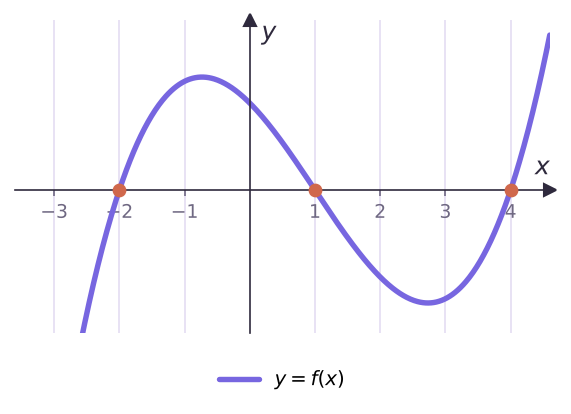
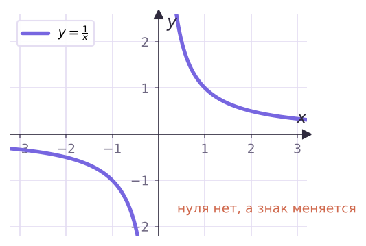
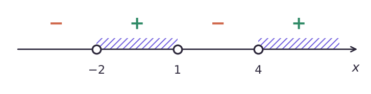
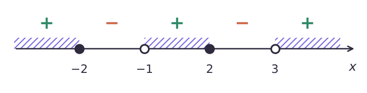
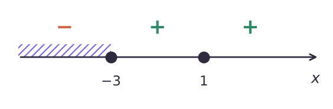

Теория
Когда нули делят прямую на промежутки знакопостоянства
Посмотри на график ниже. Функция обращается в ноль в трёх точках, и эти точки делят ось на четыре промежутка. На каждом из них функция сохраняет знак: график целиком выше оси или целиком ниже. Так получается потому, что график — непрерывная линия: чтобы перейти с одной стороны оси на другую, ему нужно пересечь ось, а пересечение — это нуль.

А если график «рвётся», знак может смениться и без нуля. У y = 1/x нулей нет вовсе, но слева от 0 она отрицательна, а справа положительна: в точке 0 у неё разрыв (она там не определена).

Интуитивно: функцию называют непрерывной на промежутке, если её график на нём — сплошная линия без разрывов. Подробно непрерывность изучают в главе 5.
Если функция f непрерывна на некотором промежутке и не имеет на нём нулей, то на этом промежутке она сохраняет постоянный знак.
Функция y = f(x)/g(x), где f(x) и g(x) — многочлены, непрерывна на своей области определения. В частности, любой многочлен непрерывен на R.
Метод интервалов: алгоритм
Пусть нужно решить неравенство f(x) > 0 (или < 0), где f(x) — дробь из многочленов. По теоремам 8.1 и 8.2 нули числителя и нули знаменателя делят числовую прямую на промежутки, на каждом из которых знак постоянен. Остаётся узнать знак в одной точке каждого промежутка.
- Разложить числитель и знаменатель на множители (если можно).
- Найти нули числителя и нули знаменателя, отметить их на прямой.
- В каждом промежутке взять пробную точку и определить знак f(x) в ней.
- Выбрать промежутки с нужным знаком и записать ответ.
Реши неравенство (x + 2)(x − 1)(x − 4) > 0.
Нули: −2, 1, 4. Неравенство строгое — точки выколотые. Пробные точки:
- x = 5 ∈ (4; +∞): 7 · 4 · 1 > 0 — плюс;
- x = 2 ∈ (1; 4): 4 · 1 · (−2) < 0 — минус;
- x = 0 ∈ (−2; 1): 2 · (−1) · (−4) > 0 — плюс;
- x = −3 ∈ (−∞; −2): (−1) · (−4) · (−7) < 0 — минус.

Ответ: (−2; 1) ∪ (4; +∞).
Нестрогие неравенства и дроби
Решения нестрогого неравенства f(x) ≥ 0 — это решения f(x) > 0 плюс корни уравнения f(x) = 0. Поэтому нули числителя становятся закрашенными точками, а нули знаменателя всегда выколоты: там дробь не определена.
Реши неравенство (x² − 4)/(x² − 2x − 3) ≥ 0.
Раскладываем: (x − 2)(x + 2) / ((x − 3)(x + 1)) ≥ 0.
Нули числителя −2 и 2 — закрашенные (дробь там равна 0, это подходит). Нули знаменателя −1 и 3 — выколотые.
Пробные точки: x = 4 — плюс; x = 2,5 — минус; x = 0: (−4)/(−3) > 0 — плюс; x = −1,5: (−1,75)/(2,25) < 0 — минус; x = −3 — плюс.

Ответ: (−∞; −2] ∪ (−1; 2] ∪ (3; +∞).
Нуль знаменателя никогда не входит в ответ, даже при знаке «≥». Записать (−1; 2] как [−1; 2] — грубая ошибка: при x = −1 дробь не существует.
Реши неравенства: а) (x − 1)²(x + 3) < 0; б) (x − 1)²(x + 3) ≤ 0.
Нули: −3 и 1. Пробные точки: x = 2 — плюс; x = 0: 1 · 3 > 0 — плюс; x = −4: 25 · (−1) < 0 — минус. При переходе через 1 знак не сменился: множитель (x − 1)² неотрицателен с обеих сторон.

а) Ответ: (−∞; −3). б) К этому добавляем корни уравнения: −3 и 1. Ответ: (−∞; −3] ∪ {1}.
В пункте б) легко потерять изолированную точку {1}: вокруг неё знак «+», но в самой точке выражение равно 0, а 0 ≤ 0 — верно.
Реши неравенство (x² + 2)(x − 1)/(x + 4) < 0.
Множитель x² + 2 положителен при всех x и на знак не влияет — на него можно разделить. Остаётся (x − 1)/(x + 4) < 0.
Нули −4 и 1, справа плюс, между ними минус. Ответ: (−4; 1).
Задачи урока
Реши в тетради. Ответы разберём на занятии.
Из учебника
- № 8.1, 8.2 — Неравенства с произведением линейных множителей.
- № 8.3, 8.4 — Дробно-рациональные неравенства.
- № 8.5 — Разложить на множители и решить.
- № 8.9, 8.10 — Множители в чётной степени: строгие и нестрогие неравенства.
- № 8.11 — Дроби с квадратными трёхчленами.
Тест к уроку
Домашнее задание
№ 8.2, 8.4 (1–4), 8.6, 8.10 из учебника письменно. В каждом неравенстве рисовать схему знаков и подписывать, какие точки выколоты и почему.